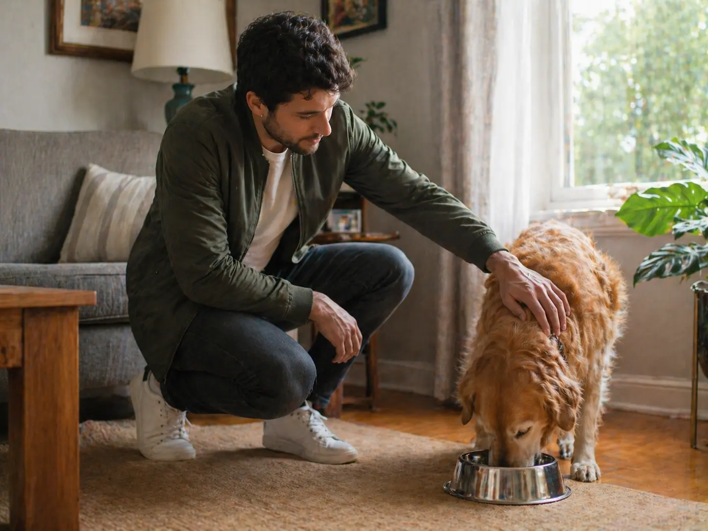
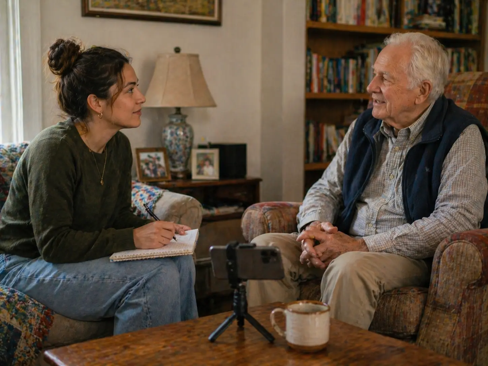

St. George & Southern Utah
Someone local to check in, when you can't be there yourself.
Red Desert Check-In provides in-person check-in visits for people, homes, pets, and the situations in between. You pick the time, share what you need looked at, and I go, check, and report back.
Local to Southern Utah · Flat $50 per visit · One-time or recurring
Most requests get a response within the day. No obligation until you decide to book.

What this is
A local set of eyes for the things you're worrying about from far away.
Sometimes something feels off and you just need someone to go look. A parent who didn't answer the phone. A house sitting empty between tenants. A pet you had to leave behind for a few days. A loved one who just got taken to the hospital and family is still on the way.
Red Desert Check-In is a simple, local, in-person service for those moments. I show up, check on the person, the home, the pet, or the situation you described, and I send you a clear, honest update so you know what's actually going on.
This is not a medical service, not emergency response, and not full-time caregiving. It's a dependable local person providing presence, attention, and a reliable report when you can't be there yourself.
What I can check on
Types of check-ins
Every visit is built around what you actually need. These are the most common situations, but if yours isn't listed, ask.
-
Aging parents or loved ones
A visit, a conversation, and a look around to make sure things seem okay. You get a clear report on how they're doing and what, if anything, needs attention.
-
Homes and property
Walk the property, check doors, windows, water, mail, and anything else you want looked at. Useful when a home is unattended or you just want reassurance.
-

Pets
Stop in, check on food and water, spend a little time, and let you know how your animal is doing. Not a replacement for a sitter, but a dependable set of eyes.
-
Rentals or vacant homes
Check on a rental between tenants, a vacation home, or a property on the market. A quick walk-through and an honest update on condition.
-

Business or property checks
For small businesses, storefronts, or properties that need a periodic local walk-by. I go, look, and report back so you know things are as they should be.
-
Custom situations
Something that doesn't fit a category? Describe it. If it's a local check-in I can do, we'll figure out the details together.
-
Hospital support check-ins
If someone has been taken to the hospital and family is far away or still on the way, I can stop by, sit with them, and simply be there until family arrives. This is calm presence, support, and communication — not medical care and not emergency response.
How it works
Three simple steps.
-
1
Choose a time
Tell me when you'd like a visit and what you want checked. One-time or recurring — same flat rate.
-
2
Share the details
What should I look at, who should I talk to, and what does a good visit look like to you? We agree on the details beforehand.
-
3
I go and report back
I show up, do the check-in, and send you a clear, honest update so you know what's going on.
Pricing
One flat rate. No tiers, no surprises.
$50
per standard local check-in
A standard visit includes:
- An in-person visit to the location you choose
- The checks you requested, agreed on beforehand
- A clear written or photo update sent to you afterward
- Same price whether it's one-time or recurring
Add-ons & special requests
Most check-ins are covered by the flat rate. If you need more, just ask. Add-ons and extra time can be discussed ahead of time whenever possible.
- Extra time on-site
- Video walkthroughs
- More detailed updates
- Waiting with someone until family arrives
- Multiple stops in one trip
- Other special requests depending on the situation
If your situation is unusual, describe it and I'll tell you honestly whether it fits the flat rate or needs something more.
Why people use this
Peace of mind, from a distance.
A reliable local update
You stop guessing and worrying. Someone you trust goes, looks, and tells you what they actually saw.
Calmer for everyone
The person being checked on isn't alone, and you aren't left wondering. A short visit can settle a lot of worry.
No pressure, no packages
One visit or recurring. No subscriptions, no minimums, no upselling. You book when you need it.
Someone who knows the area
I live here. I know the neighborhoods, the roads, and the local resources if you need a referral beyond a check-in.
About
I'm Jenell. I started this because the in-between moments matter.
I've spent nearly a decade in medical alarm response-center dispatch and supervision — the world of medical-alert activations, older adults, worried families, and time-sensitive situations. I know what it feels like to get a call and not be able to get there fast.
Red Desert Check-In is for those moments. Not the emergency. The part after, or before, when someone local just needs to show up, pay attention, and report back.
Background: Emergency Medical Dispatcher Certified · CPR Certified · Senior Home Safety Specialist®
What this is not
Clear boundaries, so you know what you're getting.
Red Desert Check-In is a local in-person check-in service. It's important to me that you understand exactly what it is and what it isn't.
- Not 911. If this is an emergency, call 911 first.
- Not emergency response. I don't provide medical or urgent intervention.
- Not nursing or medical care. No medication management, no hands-on care, no clinical services.
- Not full-time caregiving. This is a check-in, not ongoing daily care.
If your need is outside what I do, I'll tell you and point you toward the right kind of help when I can.
Need someone to go look?
Tell me what's on your mind. If a check-in fits, we'll set it up. If it doesn't, I'll help you find what does.